Aware Me
A wearable that helps people with fear of public speaking to overcome their anxiety.
Our team was to research, design and test an assistive technology that solved a real problem. We chose people who have a fear of public speaking.
My Role
- brainstorming
- sketching / storyboarding
- interaction design with Balsamiq
- usability testing
Brainstorming
At the beginning of the project our team did a bit of brainstorming to get as many ideas as possible on paper. We thought in broad terms and did not limit ourselves to what was possible or even made sense.

Affinity Diagramming
My team and I used the brainstorming ideas to in uence and construct an af nity diagram. What these sticky notes say is less important than the nding that came from af nity diagramming. People with public speaking fears would do speci c tasks relative to the day of speaking: pre, during an post speech. The gures above illusrate most activities that happen before and during a speech.
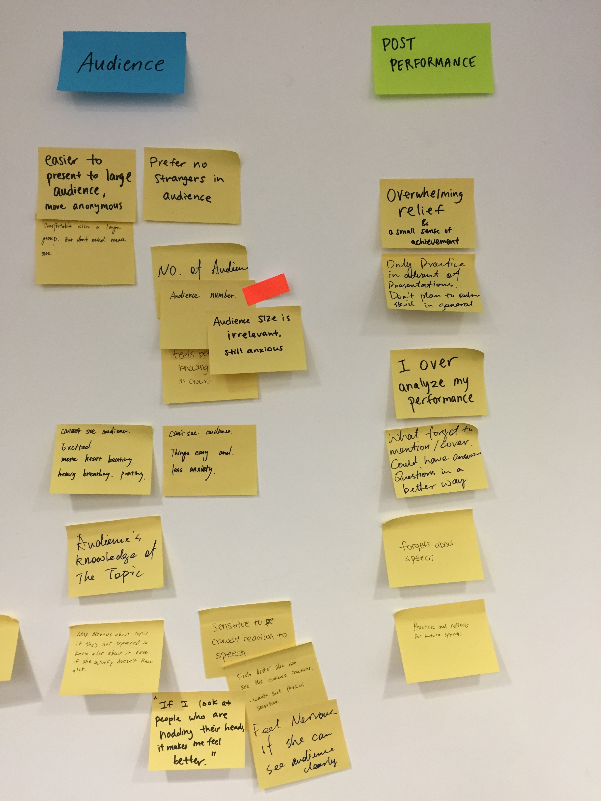
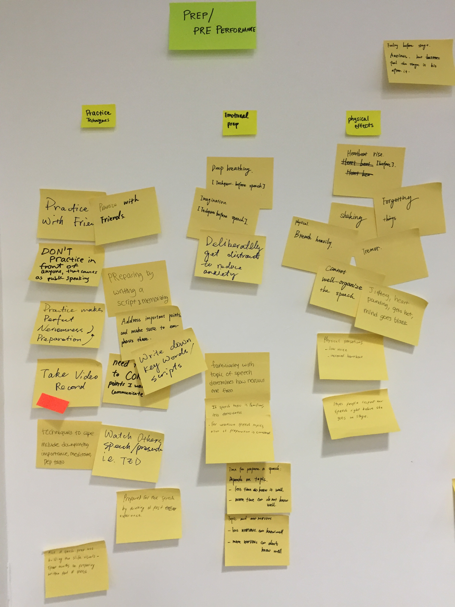
Early Storyboarding
I created this storyboard for an early idea I had using augmented reality to alter the speaker’s perception of the audience. This storyboard was directly in uenced from user interviews and the af nity diagram.
Prototyping with AR is dif cult so sketching ideas with this storyboard was absolutely essential for exploring this area.
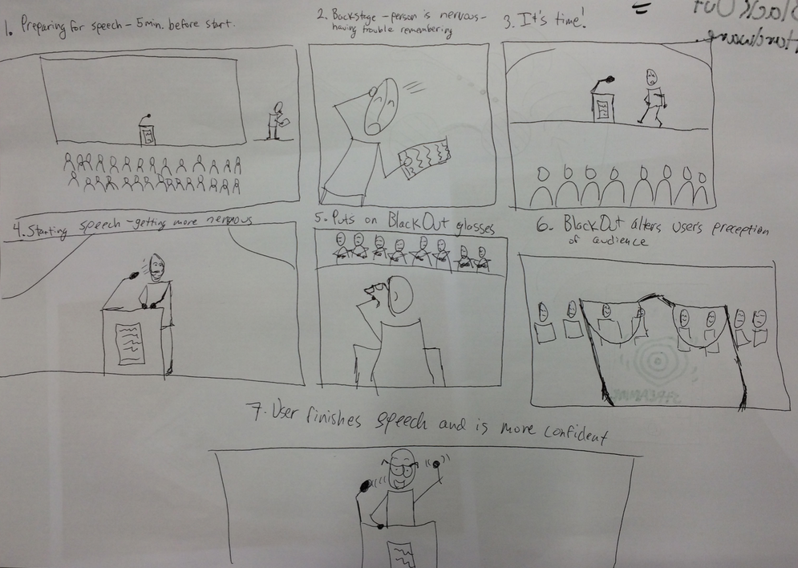
Parallell Sketching
While creating storyboards for an AR approach to our design, I also explored an idea where the speaker would wear an earpiece that would monitor for rising anxiety through biometrics. It would also provide helpful, discreet hints to the speaker if she forgot her speech.
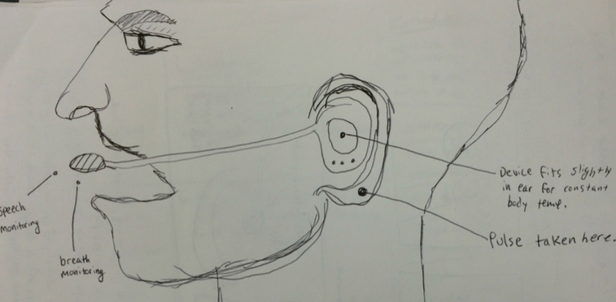
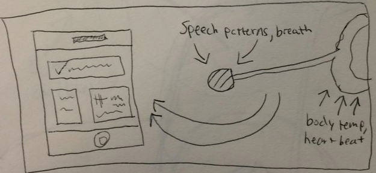
Idea Refinement
At this point in the design process we settled on a handheld device that guided a person through breathing and voice exercises. I created these low- sketches of the device and UI for feedback from our mentor as well as a CBT therapist.
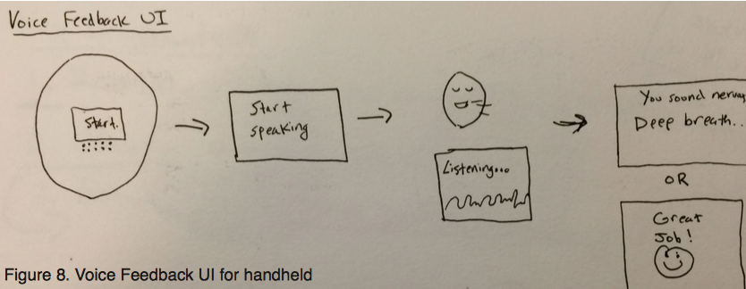
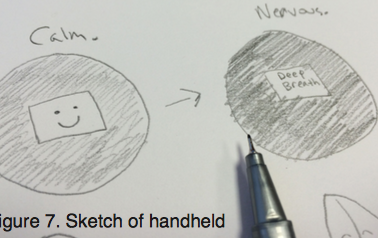
Idea Iteration
Following the results of target audience interviews, we decided to contine sketching to generate more ideas. We did not receive encouraging feedback from our previous storyboards. At this point, however, we learned just how important is sketching and storyboarding. We were glad we did not invest a lot of time into past designs; as a result, rapid iteration without losing time was possible.
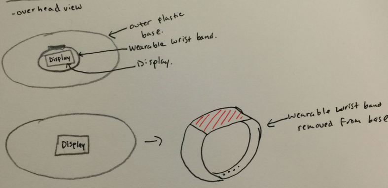
Usability Testing
Once we had a working prototype, we hosted a usability testing session with several potential users of this device. Feedback from the tests gave us an invaluable lesson about how much can't be assumed about users without talking to them.
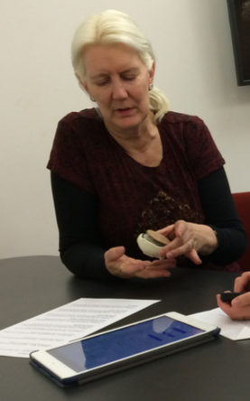
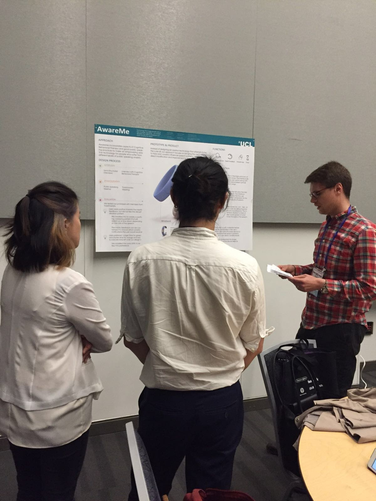
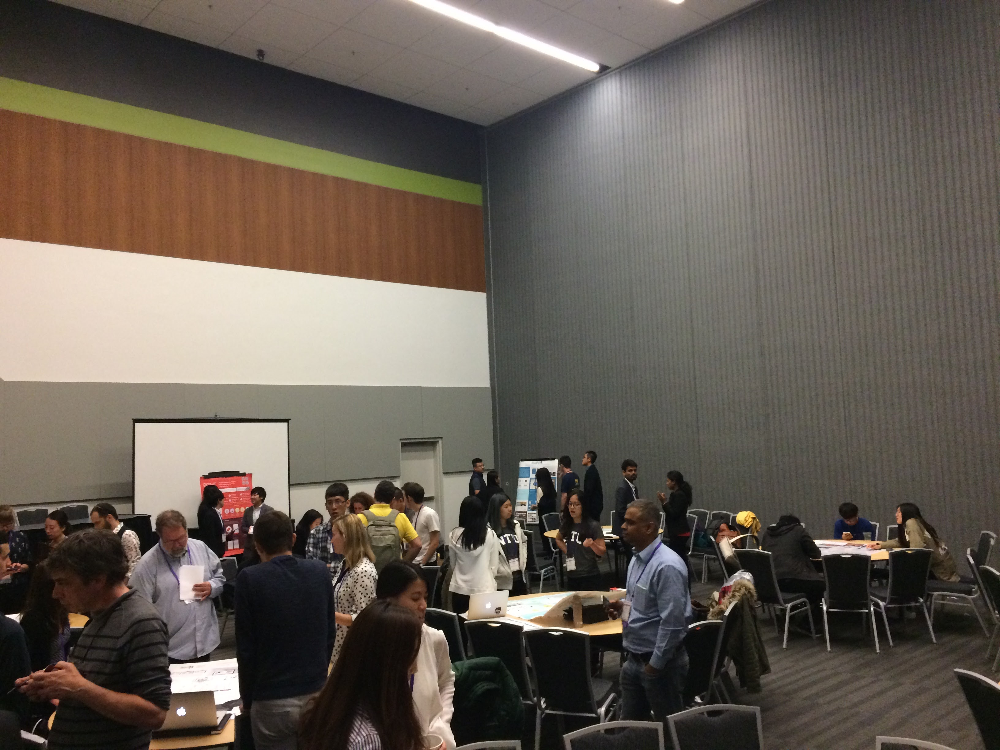
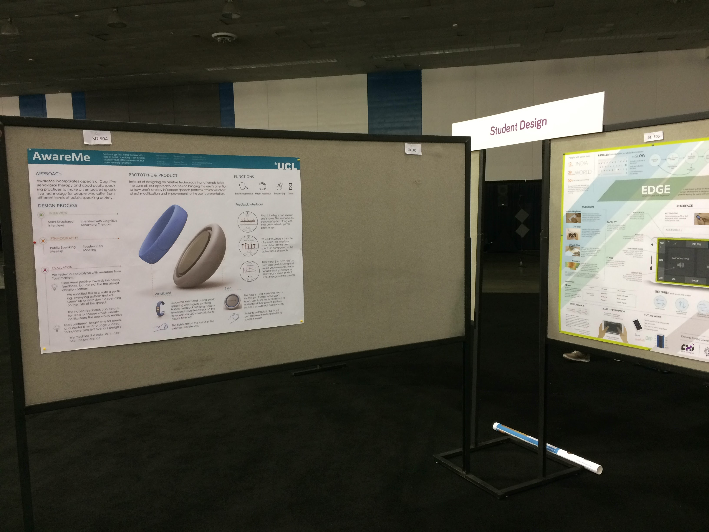
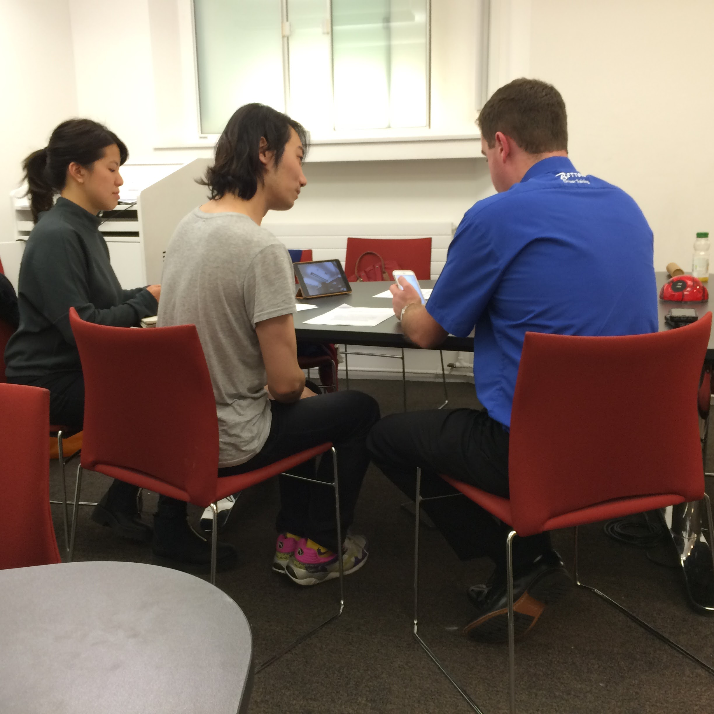

Copyright © 2017 Mark Bubel